에너지관리기사 (2015-09-19 기출문제)
1과목: 연소공학
1. 다음과 같은 조성의 석탄가스를 연소시켰을 때의 이론습연소가스량(Nm3/Nm3)은?
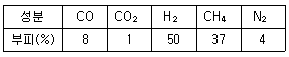
- 5.61
- 4.61
- 3.94
- 2.94
(정답률: 41%)

2. 화염이 공급 공기에 의해 꺼지지 않게 보호하며 선회기 방식과 보염판 방식으로 대별되는 장치는?
- 윈드박스
- 스테빌라이저
- 버너타일
- 콤버스터
(정답률: 78%)
3. 저위발열량이 1784kcal/kg의 석탄을 연소시켜 13200kg/h의 증기를 발생시키는 보일러의 효율은? (단, 석탄의 발열량은 6040kcal/kg이고, 증기의 엔탈피는 742kcal/kg, 급수의 엔탈피는 23kcal/kg이다.)
- 64%
- 74%
- 88%
- 94%
(정답률: 56%)
4. 유압분무식 버너의 특징에 대한 설명 중 틀린 것은?
- 기름의 점도가 너무 높으면 무화가 나빠진다.
- 유지 및 보수가 간단하다.
- 대용량의 버너제작이 용이하다.
- 분무 유량조절의 범위가 넓다.
(정답률: 70%)
5. 기체 연료의 장점이 아닌 것은?
- 연소조절이 용이하다.
- 운반과 저장이 용이하다.
- 회분이나 매연이 없어 청결하다.
- 적은 공기로 완전연소가 가능하다.
(정답률: 83%)
6. 연도가스를 분석한 결과 CO2 10.6%, O2 4.4%, CO가 0.0% 이었다. (CO2)max는?
- 13.4%
- 19.5%
- 22.6%
- 35.0%
(정답률: 62%)
7. 다음 중 건식집진장치가 아닌 것은?
- 사이클론(Cyclone)
- 백필터(Bag filter)
- 멀티클로(Multiclone)
- 사이클론 스크러버(Cyclone scrubber)
(정답률: 66%)
8. 중유연소에 있어서 화염이 불안정하게 되는 원인이 아닌 것은?
- 유압의 변동
- 노내 온도가 높을 때
- 연소용 공기의 과다(過多)
- 물 및 기타 협잡물에 의한 분부의 단속(斷續)
(정답률: 80%)
9. 중유에 대한 일반적인 설명으로 틀린 것은?
- A 중유는 C 중유보다 점성이 작다.
- A 중유는 C 중유보다 수분 함유량이 적다.
- 중유는 점도에 따라 A급, B급, C급으로 나뉜다.
- C 중유는 소형디젤기관 및 소형보일러에 사용된다.
(정답률: 80%)
10. 순수한 CH4를 건조공기로 연소시키고 난 기체 화합물을 응축기로 보내 수증기를 제거시킨 다음, 나머지 기체를 Orsat법으로 분석한 결과, 부피비로 CO2가 8.21%, CO가 0.41%, O2가 5.02%, N2가 86.36% 이었다. CH4 1kg-mol 당 약 몇 kg-mol의 건조공기가 필요한가?
- 7.2kg-mol
- 8.5kg-mol
- 10.3kg-mol
- 12.1kg-mol
(정답률: 40%)
11. 여과 집진장치의 여과제중 내산성, 내알칼리성 모두 좋은 성질을 지닌 것은?
- 테트론
- 사란
- 비닐론
- 글라스
(정답률: 82%)
12. 이론 공기량의 정의로 옳은 것은?
- 연소장치의 공급 가능한 최대의 공기량
- 단위량의 연료를 완전 연소시키는 데 필요한 최대의 공기량
- 단위량의 연료를 완전 연소시키는 데 필요한 최소의 공기량
- 단위량의 연료를 지속적으로 연소시키는 데 필요한 최대의 공기량
(정답률: 79%)
13. 다음 중 매연 측정을 위해 사용하는 것은?
- 보염장치
- 링겔만 농도표
- 레드우드 점도계
- 사이클론 장치
(정답률: 85%)
14. 예혼합 연소방식의 특징으로 틀린 것은?
- 내부 혼합형이다.
- 불꽅의 길이가 확산 연소방식보다 짧다.
- 가스와 공기의 사전 혼합형이다.
- 역화 위험이 없다.
(정답률: 69%)
15. 어떤 중유 연소보일러의 연소배기가스의 조성이 CO2(SO2포함)=11.6%, CO=0%, O2=6.0%m N2=82.4%이었다. 중유의 분석 결과는 중량단위로 탄소 84.6%, 수소 12.9%, 황 1.6%, 산소 0.9%로서 비중은 0.924이었다. 연소할 때 사용된 공기의 공기비는?
- 1.08
- 1.18
- 1.28
- 1.38
(정답률: 31%)
16. 고체연료의 연료비(fuel ratio)를 옳게 나타낸 것은?
- 휘발분/고정탄소
- 고정탄소/휘발분
- 탄소/수소
- 수소/탄소
(정답률: 81%)
17. 탄소 1kg을 연소시키는 데 필요한 공기량은?
- 1.87 Nm3/kg
- 3.93 Nm3/kg
- 8.89 Nm3/kg
- 13.51 Nm3/kg
(정답률: 73%)
18. 통풍방식 중 평형통풍에 대한 설명으로 틀린 것은?
- 통풍력이 커서 소음이 심하다.
- 안정한 연소를 유지할 수 있다.
- 노내 정압을 임의로 조절할 수 있다.
- 중형 이상의 보일러에는 사용할 수 없다.
(정답률: 79%)
19. 분젠 버너의 가스유속을 빠르게 했을 때 불꽃이 짧아지는 이유는?
- 층류 현상이 생기기 때문에
- 난류 현상으로 연소가 빨라지기 때문에
- 가스와 공기의 혼합이 잘 안되기 때문에
- 유속이 빨라서 미처 연소를 못하기 때문에
(정답률: 67%)
20. 배기가스 출구 연도에 댐퍼를 부착하는 주된 이유가 아닌 것은?
- 통풍력을 조절한다.
- 과잉공기를 조절한다.
- 배기가스의 흐름을 차단한다.
- 주연도, 부연도가 있는 경우에는 가스의 흐름을 바꾼다.
(정답률: 79%)
2과목: 열역학
21. 이상기체 1몰이 온다가 23℃로 일정하게 유지되는 등온과정으로 부피가 23L에서 45L로 가역 팽창하였을 때 엔트로피 변화는 몇 J/K 인가? (단, -R=8.314kJ/kmolㆍK이다.)
- -5.58
- 5.58
- -1.67
- 1.67
(정답률: 52%)
22. 출력이 100kW인 디젤 발전기에서 시간당 25kg의 연료를 소모한다. 연료의 발열량이 42000kJ/kg일 때 이 발전기의 전환효율은 얼마인가?
- 34%
- 40%
- 60%
- 66%
(정답률: 46%)
23. 압력을 일정하게 유지하면서 15kgm의 이상기체를 300K에서 500K까지 가열하였다. 엔트로피 변화는 몇 KJ/K 인가? (단, 기체상수는 0.189kJ/kgㆍK, 비열비는 1.289이다.)
- 5.273
- 6.459
- 7.441
- 8.175
(정답률: 45%)
24. 용기 속에 절대압력이 850kpa, 온도 52℃인 이상기체가 49kg 들어 있다. 이 기체의 일부가 누출되어 용기 내 절대압력이 415kpa, 온도 27℃가 되었다면 밖으로 누출된 기체는 약 몇 kg인가?
- 10.4
- 23.1
- 25.9
- 47.6
(정답률: 50%)
25. 노점온도(dew point temperature)를 가장 옳게 설명한 것은?
- 공기, 수증기의 혼합물에서 수증기의 분압에 대한 수증기 과열상태 온도
- 공기, 가스의 혼합물에서 가스의 분압에 대한 가스 과열상태 온도
- 공기, 수증기의 혼합물을 가열시켰을 때 증기가 없어지는 온도
- 공기, 수증기의 혼합물에서 수증기의 분압에 해당하는 수증기 포화온도
(정답률: 66%)
26. 이상적인 증기압축 냉동사이클에서 증발온도가 동일하고 응축온도가 아래와 같을 때 성능계수가 가장 큰 경우는?
- 15℃
- 20℃
- 30℃
- 25℃
(정답률: 64%)
27. 다음의 열역학 선도 중 몰리 에선도(Mollier chart)를 나타낸 것은?
- P - V
- T - S
- H - P
- H - S
(정답률: 60%)
28. 공기 온도가 15℃, 대기압이 758.7mmHg인 때에 습도계로 공기중의 증기의 분압이 9.5mmHg임을 알았다. 건조공기의 밀도는 얼마인가? (단, 0℃, 760mmHg때의 건조공기의 밀도는 1.293kg/m3이다.)
- 1.02kg/m3
- 1.21kg/m3
- 1.40kg/m3
- 1.61kg/m3
(정답률: 47%)
29. 공기를 왕복식 압축기를 사용하여 1기압에서 9기압으로 압축한다. 이 경우에 압축에 소요되는 일을 가장 작게 하기 위해서는 중간단의 압력을 다음 중 어느 정도로 하는 것이 가장 적당한가?
- 2기압
- 3기압
- 4기압
- 5기압
(정답률: 60%)
30. 물에 관한 다음 설명 중 틀린 것은?
- 물은 4℃ 부근에서 비체적이 최대가 된다.
- 물이 얼어 고체가 되면 밀도가 감소한다.
- 임계온도보다 높은 온도에서는 액상과 기상을 구분할 수 없다.
- 액체상태의 물을 가열하여 온도가 상승하는 경우, 이 때 공급한 열을 현열이라고 한다.
(정답률: 57%)
31. 동일한 압력에서 100℃, 3kg의 수증기와 0℃, 3kg의 물의 엔탈피 차이를 몇 kJ인가? (가. 평균정압비열은 4.18kJ/kgㆍK이고, 100℃에서 증발잠열은 2250kJ/kg이다.)
- 638
- 1918
- 2668
- 80⑤
(정답률: 38%)
32. 다음 중 터빈에서 증기의 일부를 배출하여 급수를 가열하는 증기사이클은?
- 사바테 사이클
- 재생 사이클
- 재열 사이클
- 오토 사이클
(정답률: 57%)
33. 다음 중 물의 임계압력에 가장 가까운 값은?
- 1.03kPa
- 100kPa
- 22MPa
- 63MPa
(정답률: 61%)
34. 30℃와 100℃ 사이에서 냉동기를 가동시키는 경우 최대의 성능계수(COP)는 약 얼마인가?
- 2.33
- 3.33
- 4.33
- 5.33
(정답률: 58%)
35. 200℃, 2MPa의 질소 5kg을 정압과정으로 체적이 1/2 이 될 때까지 냉각하는데 필요한 열량은 약 얼마인가? (단, 질소의 비열비는 1.4, 기체상수는 0.297kJ/kgㆍK이다.)
- -822kJ
- -1230kJ
- -1630kJ
- -2450kJ
(정답률: 45%)
36. 그림은 디젤 사이클의 P - V 선도이다. 단절비(cut-off ratio)에 해당하는 것은? (단, P는 압력, V는 체적이다.)
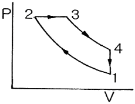
- V1/V2
- V3/V2
- V4/V3
- V4/V2
(정답률: 63%)
37. 냉동능력을 나타내는 단위로 0℃의 물을 24시간 동안에 0℃의 얼음으로 만드는 능력을 무엇이라 하는가?
- 냉동효과
- 냉동마력
- 냉동톤
- 냉동률
(정답률: 79%)
38. 다음 그림은 어떤 사이클에 가장 가까운가?
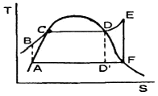
- 디젤 사이클
- 냉동 사이클
- 오토 사이클
- 랭킨 사이클
(정답률: 77%)
39. 동일한 압력하에서 포화수, 건포화증기의 비체적을 각각 V', V"로 하고, 건도 x의 습증기의 비체적을 Vx로 할 때 건도 x는 어떻게 표시되는가?
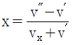
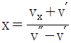
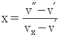
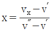
(정답률: 54%)
40. 엔탈피가 326kJ/kg인 어떤 기체가 노들을 통하여 단열적으로 팽창되어 비엔탈피가 322kJ/kg으로 되어 나간다. 유입 속도를 무시할 때 유출 속도는 몇 m/s인가?
- 4.4
- 22.6
- 64.7
- 89.4
(정답률: 46%)
3과목: 계측방법
41. 연속동작으로 잔류편차(off-set) 현상이 발생하는 제어동작은?
- 온-오프(on-off)2위치 동작
- 비례동작(P동작)
- 비례적분동작(PI동작)
- 비례적분미분동작(PID동작)
(정답률: 56%)
42. 다음 중 물리적 가스 분석법으로 가장 거리가 먼 것은?
- 적외선 흡수식
- 열전도율식
- 연소열식
- 자기식
(정답률: 62%)
43. 산소의 농도를 측정할 때 기전력을 이용하여 분석, 계측하는 분석계는?
- 자기식 O2계
- 세라믹식 O2계
- 연소식 O2계
- 밀도식 O2계
(정답률: 66%)
44. 다음 중 압전 저향효과를 이용한 압력계는?
- 액주형 압력계
- 아네로이드 압력계
- 박막식 압력계
- 스트레인게이지식 압력계
(정답률: 67%)
45. 부자식(float)면적 유량계에 대한 설명으로 틀린 것은?
- 압력손실이 적다.
- 정밀측정에는 부적당하다.
- 대유량의 측정에 적합하다.
- 수직배관에만 적용이 가능하다.
(정답률: 49%)
46. 개방형 마노미터로 측정한 공기의 압력은 150mmH2O일 때, 이 공기의 절대압력은?
- 약 150 kg/m2
- 약 150 kg/cm2
- 약 151.033 kg/cm2
- 약 10480 kg/m2
(정답률: 54%)
47. 전기저항 온도계의 특징에 대한 설명으로 틀린 것은?
- 자동기록이 가능하다.
- 원격측정이 용이하다.
- 700℃ 이상의 고온측정에서 특히 정확하다.
- 온도가 상승함에 따라 금속의 전기 저항이 증가하는 현상을 이용한 것이다.
(정답률: 77%)
48. 서로 다른 2개의 금속판을 접합시켜서 만든 바이메탈 온도계의 기본 작동원리는?
- 두 금속판의 비열의 차
- 두 금속판의 열전도도의 차
- 두 금속판의 열팽창계수의 차
- 두 금속판의 기ㅖ적 강도의 차
(정답률: 75%)
49. 휴대용으로 상온에서 비교적 정도가 좋은 이스만(Asman) 습도계는 다음 중 어디에 속하는가?
- 간이 건습구 습도계
- 저항 습도계
- 통풍형 견습구 습도계
- 냉각식 노점계
(정답률: 71%)
50. 밀폐된 관에 수은 등과 같은 액체나 기체를 봉입한 것으로 온도에 따라 체적 변화를 일으켜 관내에 생기는 압력의 변화를 이용하여 온도를 측정하는 특징의 온도계 종류로 가장 거리가 먼 것은?
- 차압식
- 기포식
- 부자식
- 액저압식
(정답률: 68%)
51. 다이얼게이지를 이용하여 두께를 측정하는 방법 등이 이에 해당하며, 정확한 기준과 비교 측정하여 측정기 자신의 부정확한 원인이 되는 오차를 제거하기 위하여 사용되는 방법은?
- 편위법
- 영위법
- 치환법
- 보상법
(정답률: 54%)
52. 점도가 높고 내열성은 강하나 환원성분위기나 금속증기 중에는 약한 특징의 열전대는?
- 구리-콘스탄탄
- 철-콘스탄탄
- 크로멜-알루멜
- 백금-백금ㆍ로듐
(정답률: 69%)
53. 산소(O2)를 측정하기 위한 가스분석기의 산소 분압이 양극에서 0.5kg/cm2, 음극에서 1.0kg/cm2로 각각 측정되었을 때 양극사이의 기전력은?
- 16.8 mV
- 15.7 mV
- 14.6 mV
- 13.5 mV
(정답률: 34%)
54. 제어계의 난이도가 큰 경우 가장 적합한 제어동작은?
- 헌팅동작
- PD동작
- ID동작
- PID동작
(정답률: 84%)
55. 다음 그림은 열전대의 결선방법과 냉접점을 나타낸 것이다. 냉접점을 표시하는 부분은?
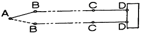
- A
- B
- C
- D
(정답률: 74%)
56. 자동제어계에서 안정성의 척도가 되는 것은?
- 감쇠
- 정상편차
- 지연시간
- 오버슈트(overshoot)
(정답률: 71%)
57. 다음 중 액주식(液柱式) 압력계가 아닌 것은?
- U자관 압력계
- 단관식 압력계
- 링밸런스식 압력계
- 격막식(diaphragm) 압력계
(정답률: 63%)
58. 열전대 재료의 구비 조건으로 틀린 것은?
- 장시간 사용에 견디며 이력현상(履歷現像)이 없을 것
- 내열성으로 고온에도 기계적 강도를 가지고 고온의 공기나 가스 중에서 내식성이 좋을 것
- 재생도가 높고 제조와 가공이 용이할 것
- 열기전력이 적고 온도상승에 따라 연속적으로 상승하지 않을 것
(정답률: 78%)
59. 오차와 관련된 설명으로 틀린 것은?
- 흩어짐이 큰 측정을 정밀하다고 한다.
- 오차가 적은 계량기는 정확도가 높다.
- 계축기가 가지고 있는 고유의 오차를 기차라고 한다.
- 눈금을 읽을 때 시선의 방향에 따른 오차를 시차라고 한다.
(정답률: 82%)
60. 피토우관에서 얻은 압력차 △P(kg/m2)와 흐르는 유체의 유량 W(m3/s)와의 관계는? (단, k는 정수, g는 중력가속도(9.8m/s2), r은 유체의 비중량(kg/m3), A는 측정관의 단면적(m2)을 나타낸다.)
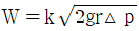
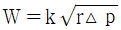
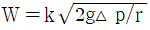
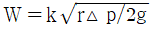
(정답률: 69%)
4과목: 열설비재료 및 관계법규
61. 에너지다소비사업자는 산업통상자원부령으로 정하는 바에 따라 에너지사용기자재의 현황을 매년 언제까지 시ㆍ도지사에게 신고하여야 하는가?
- 12월 31일까지
- 1월 31일까지
- 2월 말까지
- 3월 31일까지
(정답률: 77%)
62. 사용압력이 비교적 낮은 증기, 물 등의 유체 수송관에 사용하며, 백관과 흑관으로 구분되는 강관은?
- SPP
- SPPH
- SPHT
- SPA
(정답률: 71%)
63. 내화물에 대한 설명으로 틀린 것은?
- 샤모트질 벽돌은 카올린을 미리 SK10~14 정도로 1차 소성하여 탈수 후 분쇄한 것으로서 고온에서 광물상을 안정화한 것이다.
- 제겔콘 22번의 내화도는 1530℃이며, 내화물은 제겔콘 26번 이상의 내화도를 가진 벽돌을 말한다.
- 중성질 내화물은 고알루미나질, 탄소질, 탄화규소질, 크롬질 내화물이 있다.
- 용융내화물은 원료를 일단 용융상태로 한 다음에 주조한 내화물이다.
(정답률: 75%)
64. 스폴링(spalling)의 종류로 가장 거리가 먼 것은?
- 열적 스폴링
- 기계적 스폴링
- 화학적 스폴링
- 조직적 스폴링
(정답률: 55%)
65. 보온재의 시공방법에 대한 설명으로 틀린 것은?
- 물로 반죽하여 시공하는 보온재의 1차 시공 시 보온재의 두께는 50mm가 적당하다.
- 판상 보온재를 사용할 경우 두께가 75mm를 초과하는 경우에는 층을 두 개로 나누어 시공한다.
- 보온재는 열전도성 및 내열성을 충분히 검토한 후 선택하여 사용하여야 한다.
- 내화벽돌을 사용할 경우 일반보온재를 내층에, 내화벽돌은 외측으로 하여 밀착, 시공한다.
(정답률: 61%)
66. 에너지이용합리화법에 의거하여 산업통장자원부장관이 에너지저장의무를 부과 할 수 있는 자로 가장 거리가 먼 것은?
- 석탄산업법에 의한 석탄가공업자
- 석유사업법에 의한 석유판매업자
- 집단에너지사업법에 의한 집단 에너지사업자
- 연간 2만 석유 환산톤 이상의 에너지를 사용하는 자
(정답률: 66%)
67. 광석을 용해되지 않을 정도를 가열하는 배소(roasting)의 목적이 아닌 것은?
- 물리적 변화의 방지
- 화합수와 탄산염의 분해를 촉진
- 황(S), 인(P) 등의 유해성분을 제거
- 산화도를 변화시켜 제련이 용이
(정답률: 50%)
68. 효율기자재의 제조업자는 효율관리시험기관으로부터 측정결과를 통보받은 날로부터 며칠 이내에 그 측정결과를 한국에너지공단에 신고하여야 하는가?
- 15일
- 30일
- 90일
- 120일
(정답률: 74%)
69. 에너지법상 연료에 해당되지 않는 것은?
- 석유
- 원유가스
- 천연가스
- 제품 원료로 사용되는 석탄
(정답률: 73%)
70. 산업통상자원부장관이 정하는 바에 따라 수수료를 납부하여야 하는 경우는?
- 제조업의 허가를 신청하는 경우
- 검사대상기기의 검사를 받고자 하는 경우
- 에너지관리대상자의 지정을 받고자 하는 경우
- 열사용 기자재의 형식 승인을 얻고자 하는 경우
(정답률: 77%)
71. 산업통상자원부장관은 에너지이용합리화를 위하여 필요하다고 인정하는 경우 효율관리기자재를 장하여 고시할 수 있다. 이에 따른 효율관리기자재에 해당하지 않는 것은?
- 전기냉장고
- 조명기기
- 개인용 PC
- 자동차
(정답률: 72%)
72. 에너지이용합리화법에 의하면 국가에너지절약추진위원회는 위원장을 포함하여 몇 명으로 구성되는가?
- 10명 이내
- 15명 이내
- 20명 이내
- 25명 이내
(정답률: 71%)
73. 외경 76mm의 압력배관용 강관에 두께 50mm, 열전도율이 0.068kcal/mㆍhㆍ℃인 보온재가 시공되어 있다. 보온재 내면온도가 260℃이고 외면온도가 30℃일 때 관 길이 10m 당 열손실은?
- 313 kcal/h
- 531 kcal/h
- 982 kcal/h
- 1170 kcal/h
(정답률: 25%)
74. 강관 이음 방법이 아닌 것은?
- 나사이음
- 용접이음
- 플랜지 이음
- 플레이어 이음
(정답률: 73%)
75. 캐스터블(castable) 내화물의 특징이 아닌 것은?
- 소성할 필요가 없다.
- 접합부 없이 노체를 구축할 수 있다.
- 사용현장에서 필요한 형상으로 성형할 수 있다.
- 온도의 변동에 따라 스폴링(spalling)을 일으키기 쉽다.
(정답률: 73%)
76. 에너지 이용합리화법에 의한 에너지관리자의 기본교육과정 교육기관은?
- 1일
- 3일
- 5일
- 7일
(정답률: 79%)
77. 다음 중 내화물의 구비조건으로 틀린 것은?
- 사용온도에서 연화변형하지 않아야 한다.
- 내마모성 및 내침식성이 뛰어나야 한다.
- 재가열시에 수축이 크게 일어나야 한다.
- 상온에서 압축강도가 커야 한다.
(정답률: 80%)
78. 점토질 단열재의 특징에 대한 설명으로 틀린 것은?
- 내스폴링성이 작다.
- 노벽이 얇아져서 노의 중량이 적다.
- 내화재와 단열재의 역할을 동시에 한다.
- 안전사용온도는 1300~1500℃정도이다.
(정답률: 41%)
79. 성형물을 1300℃ 정도의 고온으로 소성하고자 할 때 일반적으로 열효율이 좋고, 온도조절의 자동화가 쉬운 특징의 가마는?
- 터널가마
- 도염식 가마
- 승염식 가마
- 도염식 둥근가마
(정답률: 71%)
80. 산업통상자원부장관은 에너지이용합리와에 관한 기본계획을 몇 년마다 수립하는가?
- 5년
- 3년
- 2년
- 1년
(정답률: 74%)
5과목: 열설비설계
81. 다음 중 보일러 구성의 3대 요소에 해당되지 않는 것은?
- 본체
- 분출장치
- 연소장치
- 부속장치
(정답률: 67%)
82. 원통 보일러의 특징이 아닌 것은?
- 압력변동이 크다.
- 구조가 간단하다.
- 보유수량이 많아 증기 발생시간이 길다.
- 보유수량이 많아 파열시 피해가 크다.
(정답률: 45%)
83. 지름이 d(cm), 두께가 t(cm)인 얇은 두께의 밀폐된 원통안에 압력 P(kg/cm2)가 작용할 때 원통에 발생하는 원주방향의 인장응력을 구하는 식은?
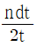
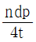
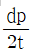
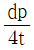
(정답률: 64%)
84. 저압용으로 내식성이 크고, 청소하기 쉬운 구조이며, 증기압이 2kg/cm2 이하의 경우에 사용되는 절탄기는?
- 강관식
- 이중관식
- 주철관식
- 황동관식
(정답률: 65%)
85. 1보일러 마력을 상당 증발량으로 환산하면 약 몇 kg/h가 되는가?
- 3.⑤
- 15.65
- 30.⑤
- 34.55
(정답률: 69%)
86. 고체연료의 연소방식이 아닌 것은?
- 화격자 연소방식
- 확산 연소방식
- 미분탄 연소방식
- 유동층 연소방식
(정답률: 72%)
87. 보일러의 과열 방지 대책으로 가장 거리가 먼 것은?
- 보일러의 수위를 너무 높게 하지 말 것
- 고열부분에 스케일 슬러지를 부착시키지 말 것
- 보일러 수를 농축하지 말 것
- 보일러 수의 순환을 좋게 할 것
(정답률: 66%)
88. 급수 및 보일러수의 순도 표시방법에 대한 설명으로 틀린 것은?
- ppm의 단위는 100만분의 1의 단위이다.
- epm은 당량농도라 하고 용액 1kg 중의 용질 1mg 당량을 의미한다.
- 보일러수에서는 재료의 부식을 방지하기 위하여 pH가 7인 중성을 유지하여야 한다.
- 알칼리도는 물속에 녹아 있는 알칼리분을 중화시키기 위해 필요한 산의 양을 말한다.
(정답률: 81%)
89. 원통보일러와 비교하여 수관보일러의 장점으로 틀린 것은?
- 고압증기의 발생에 적합하다.
- 구조가 간단하고 청소가 용이하다.
- 시동시간이 짧고 파열시 피해가 적다.
- 증발률이 크고 열효율이 높아 대용량에 적합하다.
(정답률: 69%)
90. 스케일의 주성분에 해당되지 않는 것은?
- 탄산칼슘
- 규산칼슘
- 탄산마그네슘
- 과산화수소
(정답률: 78%)
91. 최고사용압력이 490kPa, 내경이 0.6m인 주철제 드럼이 있다. 드럼 강판에 대한 최대인장강도는 8kg/mm2 안전계수는 2이며, 부식을 고려하지 않을 때, 드럼 동체에 대한 강판두께로 적당한 것은?(단, 이음 효율 n=0.94이다)
- 1mm
- 4mm
- 5mm
- 7mm
(정답률: 43%)
92. 다음 중 보일러 역화(back fire)의 원인으로 가장 옳은 것은?
- 점화 시 착화가 너무 빠르다.
- 연료보다 공기의 공급이 비교적 빠르다.
- 흡입 통풍이 과대하다.
- 연료가 불완전연소 및 미연소 된다.
(정답률: 59%)
93. 지름이 5cm인 강관(50W/mㆍK)내에 온도 98K의 온수가 0.3m/s로 흐를 때, 온수의 열전달계수(W/m2ㆍK)는?(단, 온수의 열전도도는 0.68[W/m.k]이고, Nu수(Nusseltnumber)는 160이다.)
- 1238
- 2176
- 3184
- 4232
(정답률: 48%)
94. 맞대기 용접이음에서 하중 120kg, 용접부의 길이가 3cm, 판의 두께가 2mm라 할 때 용접부의 인장응력은?
- 0.5 kg/mm2
- 2 kg/mm2
- 20 kg/mm2
- 50 kg/mm2
(정답률: 56%)
95. 긴 관의 일단에서 급수를 펌프로 압입하여 도중에서 가열, 증발, 과열을 한꺼번에 시켜 과열증기로 내보내는 보일러로서 드럼이 없고, 관만으로 구성된 보일러는?
- 이중 증발 보일러
- 특수 열매 보일러
- 연관 보일러
- 관류 보일러
(정답률: 79%)
96. 용존산소와 반응하여 질소와 물이 생성되며 용해고형물 농도가 상승하지 않아 고압보일러에 주로 사용되는 탈산소제는?
- 탄산나트륨
- 탄닌
- 히드라진
- 아황산소다
(정답률: 57%)
97. 보일러 연소량을 일정하게 하고 저부하 시 잉여증기를 축적시켰다가 갑작스런 부하변동이나 과부라 등에 대처하기 위해 사용되는 장치는?
- 탈기기
- 인젝터
- 재열기
- 어큐물레이터
(정답률: 79%)
98. 보일러에서 최고사용압력 초과로 인한 파열을 방지하기 위하여 설치하는 안전밸브의 분출압력 조정 형식이 아닌 것은?
- 레버(지렛대)식
- 중추식
- 전자식
- 스프링식
(정답률: 68%)
99. 증기로 공기를 가열하는 열교환기에서 가열원으로 150℃의 증기가 열교환기 내부에서 포화상태를 유지하고 이 때 유입공기의 입, 출구 온도는 20℃와 70℃이다. 열교환기에서의 전열량이 3090kJ/h, 전열면적이 12m2이라고 할 때 열교환기의 총괄열전달계수는?
- 2.5kJ/hㆍm2ㆍ℃
- 2.9kJ/hㆍm2ㆍ℃
- 3.1kJ/hㆍm2ㆍ℃
- 3.5kJ/hㆍm2ㆍ℃
(정답률: 28%)
100. 보일러의 설치방법에 대한 설명으로 옳은 것은?
- 증기 보일러에는 4개 이상의 유리수면계를 부착한다.
- 온도가 120℃를 초과하는 온수 보일러에는 방출밸브를 설치해야 한다.
- 온도가 120℃를 초과하는 온수 보일러에는 안전밸브를 설치한다.
- 보일러의 설치 시 수위계의 최고눈금은 보일러 최고사용압력의 3배 이상 5배 이하로 하여야 한다.
(정답률: 71%)
메탄(CH4)의 이론습연소량 = 0.8 × 10.4 = 8.32 Nm3/Nm3
일산화탄소(CO)의 이론습연소량 = 0.1 × 2.5 = 0.25 Nm3/Nm3
수소(H2)의 이론습연소량 = 0.⑤ × 34.0 = 1.70 Nm3/Nm3
질소(N2)의 이론습연소량 = 0.⑤ × 0 = 0 Nm3/Nm3 (질소는 연소에 참여하지 않으므로)
따라서, 이론습연소가스량은 8.32 + 0.25 + 1.70 = 10.27 Nm3/Nm3 이다. 이 중에서 질소는 연소에 참여하지 않으므로, 실제 이론습연소가스량은 10.27 - 0 = 10.27 Nm3/Nm3 이다. 이에 따라 정답은 10.27 × 0.547 = 5.61 Nm3/Nm3 이다.